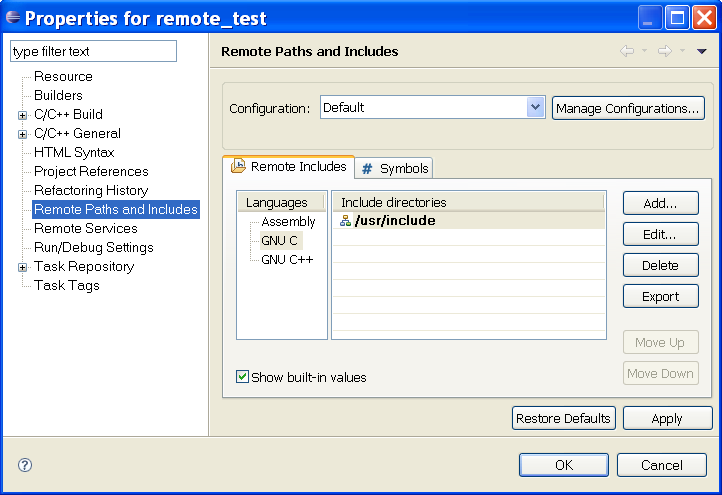
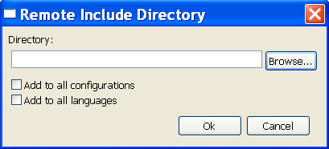

The remote indexer needs to know the location of header files in order to parse them and add their contents to the index. The Remote Includes tab of the Remote Paths and Symbols properties page allows you to add, remove and reorder the include paths that are used to find header files on the remote machine.
The paths must be given in a format that is appropriate for the operating system of the machine where the remote indexer is located.
If the remote builder has been configured properly then RDT may be able to automatically determine the include paths used by the compiler on the remote machine. These include paths are called "built-in". If RDT is not able to automatically determine the include paths, or if additional include paths are needed, then they must be added manually.
It may take some time to initially set up the include paths and other project settings. In order to avoid having to perform this task for multiple RDT installations an import/export mechanism is provided to allow these settings to be easily shared.


Clicking Add on the Remote Paths properties page will cause the Remote Include Directory dialog to appear. Enter a valid path on the remote machine, or click Browse... to launch a dialog that will allow a directory on the remote machine to be selected.
Check the Add to all configurations checkbox to add the include path to all build configurations, otherwise the include path will only be added to the build configuration that was selected on the properties page.
Check the Add to all languages checkbox to add the include path to all languages, otherwise the include path will only be added to the language that was selected on the properties page.